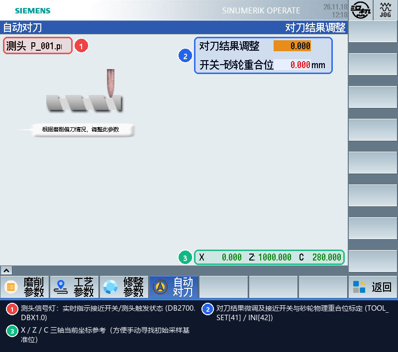

8.1 外螺纹自动对刀标定与测量
外螺纹自动对刀画面对应 a_auto.com 中的 Mask22。系统依据生成时选定的测量硬件组合（仅接近开关、仅测头、或 开关 + 测头双机构并存）自动显示对应的标定坐标系字段。


1. 界面参数与首次装配标定方法
| 参数名称 | NC 变量 | 显示条件 | 精准测量/标定步骤 |
|---|---|---|---|
| 对刀结果调整 | TOOL_SET[41] |
常驻显示 | 完成自动对刀后试磨一件，若仍存在轻微偏刀（一侧切深一侧切浅），直接在此增减修正量即可，无需破坏下面标定的物理零点基准 |
| 砂轮中心与接近开关重合 Z 坐标 | INI[42] |
配有接近开关（TOOL_SET[31]=1） |
手动移动 Z 轴，使 接近开关检测中心 正好对准 砂轮齿顶中心线（或利用标准校对棒对照确认），读取记录此时 Z 轴机械坐标 |
| 砂轮中心与测头中心重合 Z 坐标 | INI[42] |
配有测头且无开关（TOOL_SET[49]=1） |
手动移动 Z 轴，使 测头红宝石球中心 对准 砂轮齿顶中心线，记录 Z 轴坐标（或采用下文标准端面互算公式反推） |
| 测量 - 开关水平距 | TOOL_SET[50] |
双机构同时存在（开关+测头） | 仅在同时安装了测头和接近开关时显示： 测量接近开关中心与测头球心之间的水平方向净距——若 测头在左侧 / 开关在右侧，输入正值，反之输入负值 |
| 测头信号灯 1 / 2 | DB2700.DBX1.0 / DBX1.1 |
— | 界面左上角实时反馈传感器通断状态（0 灭 / 1 亮）；安装或调试时用手轻拨测针或金属片贴近开关，确认灯随动作秒变后再运行自动程序 |
提示：关于外螺纹自动对刀所需的工件位置边界（左端、右端、螺距、对刀位等），NC 自动从 磨削参数（
Mask1） 同步读取；界面左下角同样常驻显示当前机械坐标X、Z、C方便校对。
2. 外螺纹自动对刀标准作业步骤
- 完成首次基准标定：按上表填入
重合 Z 坐标（以及双机构下的测头-开关水平距），并先将对刀结果调整设为0； - 设定磨削基础边界：进入 磨削参数 页，填好工件螺距、旋向、头数、左右端坐标，以及安全退刀位置；
- 选定对刀模式与动作：
- 点亮机床操作面板上的 自动对刀键（对应
$A_DBB[5]，此时注意关闭 修整键 与 手动对刀键）； - 如希望自动对刀完成后 自动紧接着直接开始磨削，确认 机床配置 中已将
自动对刀后是否直接磨削（INI[90]）设为1（是）；若为稳妥起见先仅对刀验证，将其保持为0；
- 点亮机床操作面板上的 自动对刀键（对应
- 切到
AUTO启动：按绿色 循环启动：- 测量机构伸出（若配有开关信号则等待到位信号置
1）； - Z/C 轴定位后按预设转速探触工件螺纹牙槽（提取波峰/波谷与第一个/第二个齿中心 C 角
TOOL_SET[37..39]）； - 算得准确
C 轴起始角（TOOL_SET[4]）后测量机构缩回；
- 测量机构伸出（若配有开关信号则等待到位信号置
- 收尾与偏刀微调：
- 若试磨发现微量偏刀，回到
a_auto.comMask22调整顶部的对刀结果调整（TOOL_SET[41]） 并复磨校验即可。
- 若试磨发现微量偏刀，回到